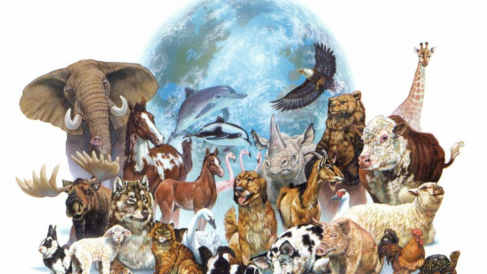

В связи с угрозой исчезновения биологических видов в лесах, следует отметить, что по мнению ученых, вымирание и исчезновение флоры и фауны и биологического разнообразия вообще угрожает не только лесам, но и всем экосистемам планеты.
Под биологическим разнообразием понимается разнообразие на трех уровнях организации: генетическом, видовом и экосистемном. Этот термин охватывает разную степень природного разнообразия, включая как число видов, так и частоту их встречаемости. Биоразнообразие – Это разнообразие жизни во всех её проявлениях, а также показатель сложности биологической системы. Понятие биологического разнообразия включает в себя все виды растений, животных и микроорганизмов, а также экосистемы, составной частью которых они являются. Человечество в целом – это часть экологической системы планеты, от ее благополучия зависит его жизнь. На самом деле, биоразнообразие составляет основу жизни на Земле, а принимая во внимание, что каждая форма жизни является весьма уникальной, вымирание лишь одного вида животных означает безвозвратную потерю одного варианта человеческой жизни и прочих живых существ. Биоразнообразие считается одним из важных инструментов прочности окружающей среды.
